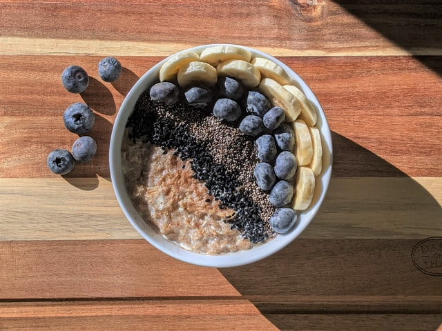

Oatmeal recipe

warm, fluffy, and comforting — it doesn't get better than this.
A hardy breakfast to start off the day.
Ingredients
- 1 cup rolled oats
- 2 cup unsweetened almond milk (any kind of milk works)
- 1 medium banana, mashed
- 1/2 teaspoon vanilla extract
- 1/2 teaspoon ground cinnamon
- pinch of salt
Steps
- Combine all ingredients into a small saucepan and turn heat to medium/high.
- Bring to a boil. Then, turn the heat down to low/medium and continually stir for around 3-5 minutes as the oatmeal cooks and thickens.
- Once oatmeal is at the desired consistency, remove from heat, and serve immediately.
- Top off with your favorite fruits, nuts, or chocolate!